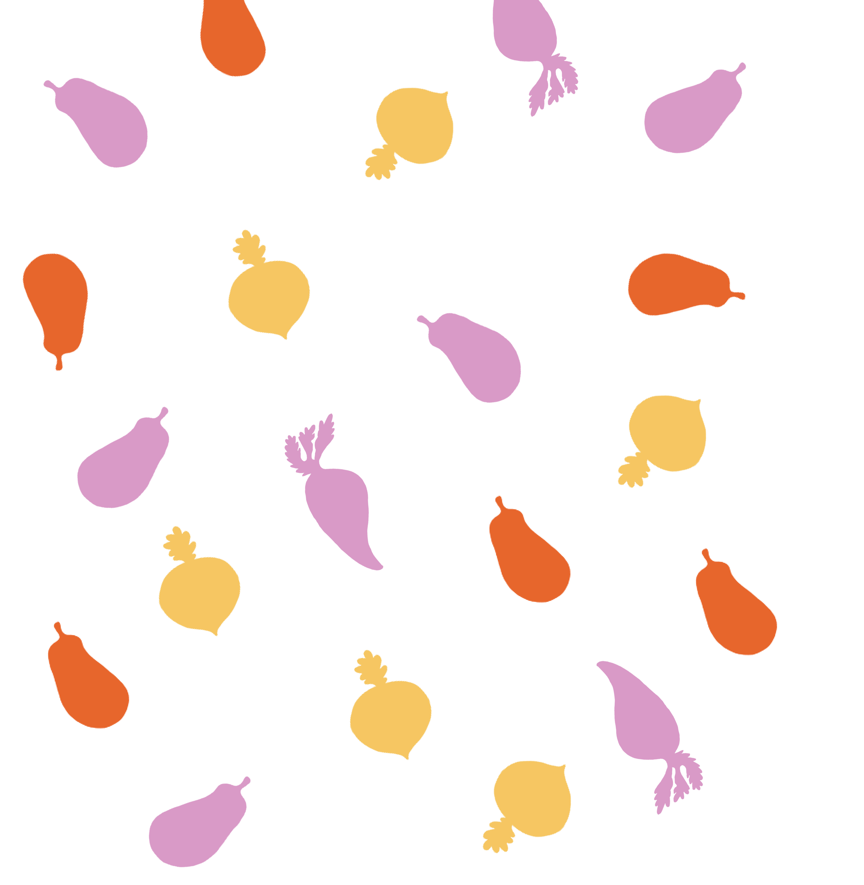

|  |
O Enoki surgiu em 2023 no âmbito do projeto final do curso de Design de Comunicação na Escola Superior Artística. Começou por ser um festival vegetariano em Vila Nova de Famalicão - Enoki Fest - mas rapidamente se tornou mais abrangente, expandindo-se para outros formatos. Como habitante vegetariana desta cidade é bastante difícil obter uma refeição rica e equilibrada em restaurantes. Para além das cadeias de fast food só existe um espaço vegetariano na cidade, e nos restantes sítios as opções são bastante limitadas. Além disso, a falta destes restaurantes também impede que as pessoas experimentem estas opções, não adotando este hábito nas suas rotinas. Ao enfrentar este problema, cria promover algo que consciencializasse os benefícios de uma dieta baseada em vegetais e fornecer informações sobre as opções disponíveis. |